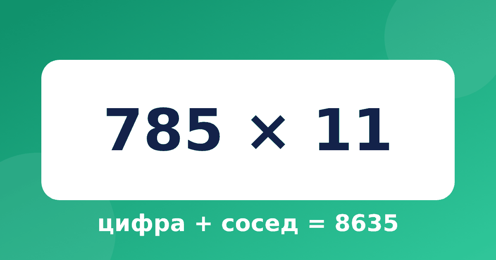

Как умножить на 11 в уме: правило «цифра плюс сосед»

Умножение на 11 считается самым простым приёмом системы Трахтенберга. Достаточно уметь складывать два числа до 18. Ниже правило, примеры с переносом и объяснение, почему всё так работает. Здесь разобрано умножение на 11 по Трахтенбергу: правило, примеры и объяснение.
Правило
Запишите число и поставьте нулик слева. Считайте справа налево: каждая цифра ответа равна самой цифре плюс её сосед. Соседом называем цифру, которая стоит справа. У последней цифры сосед невидимый ноль, поэтому первая цифра ответа всегда равна последней цифре числа.
Если сумма больше 9, пишем последнюю цифру, а единицу десятков запоминаем и прибавляем на следующем шаге. Это называется переносом.
Двузначные числа
Возьмём 36 × 11. Число с нуликами: 0 3 6 0.
- Цифра 6 и сосед 0: 6. Пишем 6.
- Цифра 3 и сосед 6: 3 + 6 = 9. Пишем 9.
- Нулик и сосед 3: 3. Пишем 3.
Ответ 396. Заметьте закономерность: у двузначных чисел с суммой цифр меньше 10 средняя цифра ответа равна сумме цифр. Если сумма цифр больше 9, понадобится перенос, как в примере 78 × 11: 8; 7 + 8 = 15, пишем 5, 1 запоминаем; 0 + 7 + 1 = 8. Ответ 858.
Трёхзначные числа с переносом
Умножение на 11 трёхзначных чисел почти всегда требует переноса, поэтому его стоит разобрать отдельно.
Теперь посложнее: 785 × 11. Число с нуликами: 0 7 8 5 0.
- Цифра 5, сосед 0: 5. Пишем 5.
- Цифра 8, сосед 5: 8 + 5 = 13. Пишем 3, 1 запоминаем.
- Цифра 7, сосед 8, плюс 1 в уме: 7 + 8 + 1 = 16. Пишем 6, 1 запоминаем.
- Нулик, сосед 7, плюс 1: 0 + 7 + 1 = 8. Пишем 8.
Ответ 8635. Проверим сложением: 785 × 10 + 785 = 7850 + 785 = 8635. Всё верно.
Четырёхзначные числа
Для умножения на 11 четырёхзначных чисел правило то же самое, шагов просто больше. Возьмём 2354 × 11: цифры ответа справа налево получаются так: 4; 5 + 4 = 9; 3 + 5 = 8; 2 + 3 = 5; 0 + 2 = 2. Ответ 25894. Если ребёнок справился с трёхзначными числами, с четырёхзначными он справится тоже: ничего нового там нет.
Почему это работает
Дело в том, что 11 = 10 + 1. Значит, число × 11 = число × 10 + число. Когда мы складываем число, сдвинутое на разряд, и само число, каждая цифра встречается с цифрой, которая стояла справа от неё. Вот откуда «сосед». Когда ребёнок видит такое объяснение, приём перестаёт быть фокусом, и его проще запомнить. Объяснения в тренажёре построены именно так: сначала показываем разложение, потом правило.
Тренируемся: примеры с ответами
Закройте ответы и считайте по правилу, потом сверьтесь.
- 23 × 11 = 253
- 45 × 11 = 495
- 67 × 11 = 737
- 134 × 11 = 1474
- 568 × 11 = 6248
- 909 × 11 = 9999
Если ответ не сошёлся, найдите шаг, где ошиблись: чаще всего это перенос. Ещё один способ проверки — умножить число на 10 и прибавить само число.
Как показывать ребёнку
Сначала считайте вместе, называя вслух каждый шаг: «цифра 8, сосед 5, всего 13, пишу 3, один в уме». Потом поменяйтесь ролями: пусть ребёнок объясняет вам. Не больше пяти примеров за раз, иначе внимание падает. Если приём не пошёл, вернитесь на шаг назад и повторите, как складывать в уме с переходом через десяток, ведь сумма цифр с переносом опирается именно на этот навык.
Особые случаи
С нулями внутри числа правило работает без изменений, нужно только не пропускать их. Например, 305 × 11: цифры справа налево дают 5; 0 + 5 = 5; 3 + 0 = 3; 0 + 3 = 3. Ответ 3355. Число 99 × 11 даёт 1089: 9; 9 + 9 = 18, пишем 8, 1 запоминаем; 0 + 9 + 1 = 10, пишем 0, 1 запоминаем; в конце остаётся перенос 1, и мы пишем его слева. Если после нулика остался перенос, он просто записывается ещё одной цифрой слева.
Это полезно показать отдельно, потому что именно такие примеры с переносом в конце ребята чаще всего считают неверно. Возьмите три-четыре числа из девяток и нулей, и приём закрепится.
Игра на пять минут
Устройте «охоту на соседей». Напишите на листе число, например 5278, и поставьте нулики по краям. Ребёнок обводит каждую цифру и её соседа одним цветом, потом считает. Игра хороша тем, что задание превращается в картинку: ребёнок видит, что соседи по очереди «передают» цифры ответу. Если сумма с переносом, ставьте рядом маленький кружок с единицей.
Типичные ошибки
- Забывают нулик слева, и последняя цифра ответа теряется.
- Забывают перенос и пишут двузначное число в одну клетку.
- Берут соседа слева вместо соседа справа. Помогает привычка идти справа налево и показывать соседа пальцем.
Для сравнения почитайте, как таблица умножения на 11 строится в обычной школьной записи, а потом потренируйтесь в тренажёре «Быстрый счёт» на примерах с переносом.